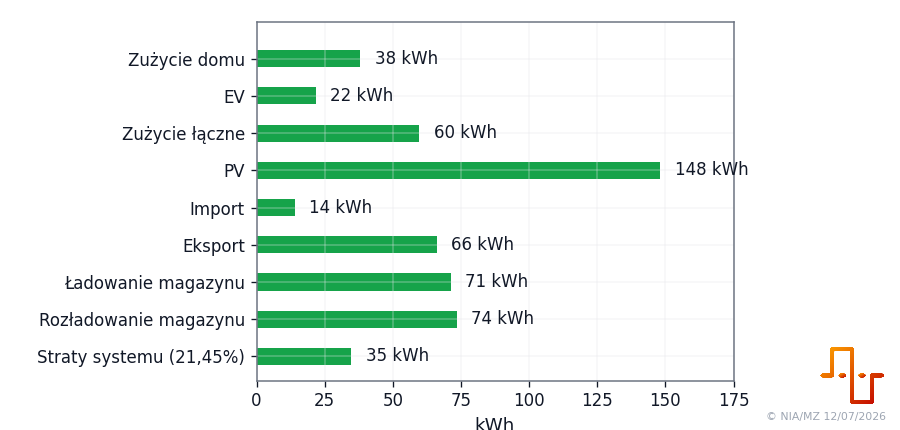
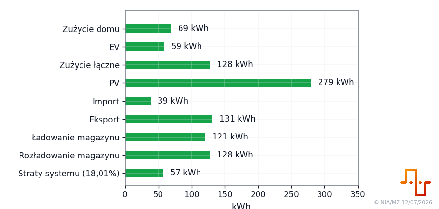

Bilans energii domu, PV i magazynu
Wygenerowano: 2026-07-12 18:45:44
okres: 2026-07-12
Dziś
tydzień: 2026-W28
Tydzień
miesiąc: 2026-07
Miesiąc
od zera licznika do ostatniego rekordu
Od początku
Dziś
okres: 2026-07-12
Bieżący dzień: wartości okresowe z liczników brzegowych dnia. Sprawność nie jest pokazywana na rysunku.
8,1 PV + 0,1 import + 6,6 energia oddana z zapasu baterii = 7,4 dom + 0,0 EV + 2,9 eksport + 4,5 straty systemu (30,27%) kWh
Tydzień
tydzień: 2026-W28
Aktualny tydzień: agregacja liczona jako koniec okresu minus początek okresu.
148,2 PV + 14,1 import = 38,1 dom + 21,7 EV + 66,1 eksport + 1,6 przyrost energii w baterii + 34,8 straty systemu (21,45%) kWh
Miesiąc
miesiąc: 2026-07
Aktualny miesiąc: agregacja liczona jako koniec okresu minus początek okresu.
279,4 PV + 38,6 import = 68,8 dom + 58,7 EV + 131,2 eksport + 2,0 przyrost energii w baterii + 57,3 straty systemu (18,01%) kWh
Od początku
od zera licznika do ostatniego rekordu
Total: wartości liczników narastających liczone od zera; to główna metryka długookresowa.
3200,1 PV + 3701,3 import + 0,7 energia oddana z zapasu baterii = 3463,6 dom + 2037,5 EV + 1088,1 eksport + 312,9 straty systemu (4,53%) kWhDla wartości total liczniki energii są liczone od zera, natomiast początkowy SOC pochodzi z pierwszego dostępnego pomiaru.
Sprawność systemu użyta w sekcji sprawności: 89,92%.
Obliczenie jest proste i jawne:
sprawność_systemu = 100 × battery_discharge_counter_delta_kWh / battery_charge_counter_delta_kWh
Dzień, tydzień i miesiąc są liczone jako różnica liczników na końcu i początku okresu. Total jest liczony od zera licznika do ostatniej dostępnej wartości total counter. Sloty 5/15-minutowe służą tylko do diagnostyki szczegółowej.
Współczynnik sprawności: 0,8992. Flagi jakości: total_origin_zero,period_has_gaps,system_losses_total_uses_first_available_soc.
| Próg | Wynik |
|---|---|
| Wyjście na 0% bez amortyzacji | 1,112× ceny zakupu |
| 5% zysku bez amortyzacji | 1,168× ceny zakupu |
| Przykład: zakup 1,000 PLN/kWh, amortyzacja 0,100 PLN/kWh, próg 0% | 1,223 PLN/kWh |
| Przykład: zakup 1,000 PLN/kWh, amortyzacja 0,100 PLN/kWh, próg 5% | 1,284 PLN/kWh |
Amortyzacja 0,100 PLN/kWh jest założeniem arbitralnym.
- Rysunki są generowane standardowo: CSV pod wykres → plik
.pic_def→90_10_pic_drawer.py; układ poziomy używarender_type=barh. - Sprawność magazynowania nie jest pokazywana na rysunkach; jest liczona wyłącznie w sekcji sprawności.
- Straty systemu są liczone osobno dla każdego okresu: PV + import + energia netto oddana z zapasu baterii − dom − EV − eksport − energia netto zachowana w baterii.
- Dla dnia, tygodnia i miesiąca granice liczników oraz SOC są zgodne. Dla totalu liczonego od zera liczników wynik jest oznaczony jako szacunkowy, ponieważ początkowy SOC pochodzi z pierwszego dostępnego pomiaru.
- Zmiana energii baterii wynika ze zmiany SOC i pojemności
battery_capacity_kWh; wewnętrzne liczniki ładowania i rozładowania nie są dodawane do tego bilansu, aby nie liczyć tej samej energii podwójnie. - Dzień, tydzień i miesiąc są liczone z liczników brzegowych okresu. Total jest liczony od zera licznika do ostatniej dostępnej wartości. Sloty są tylko diagnostyką.
- Jeżeli sprawność przekracza 100%, moduł oznacza to flagą
storage_efficiency_gt_100_check_counters.